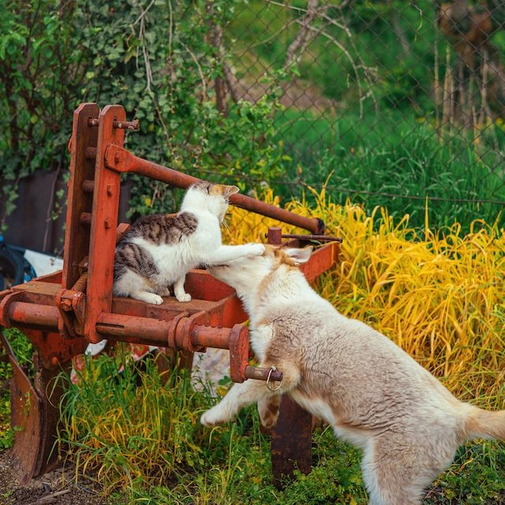

bengal
3 years old
bengal
3 years old
bengal
Because they are adorable and badass at the same time.

The answer to that questions can be difficult, because it depends of multiple factors, but the short answer is Yes!
The cats are as vegan as lions or tigers. So no, the answer is no. Give your cat the proper food if you care about its health.

A cat could definetly be trained to perform many tasks, but they are not so receptive to training like a dog. Would require a lot of patience and effort.